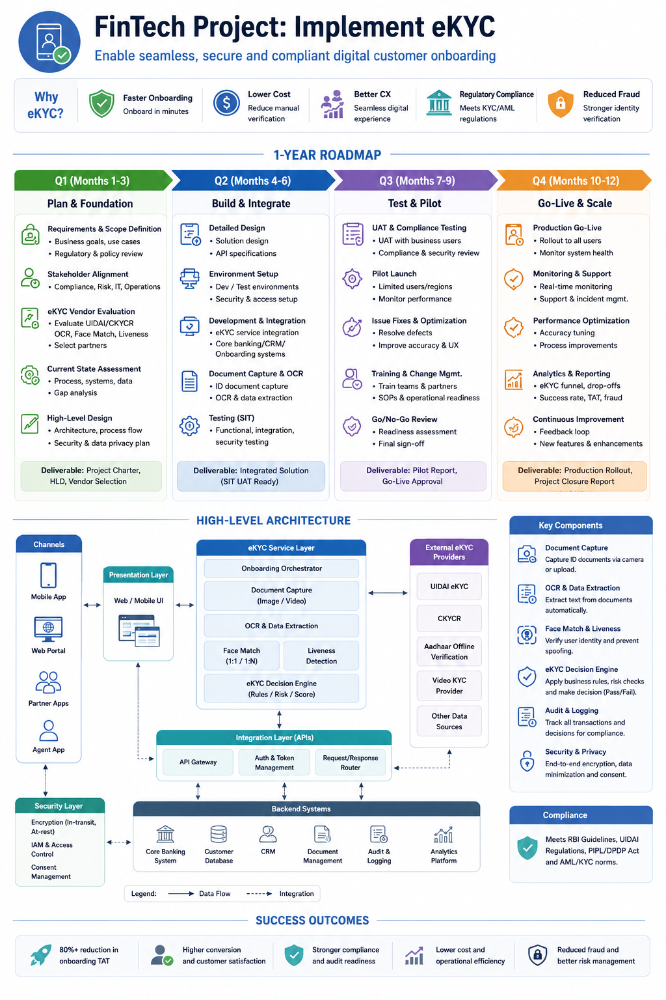

Case Study 03
FinTech eKYC Platform Modernization
🌐 Domain: BFSI / FinTech / Digital Banking
💼 Role: Program / Project Manager
🔄 Transformation: Legacy eKYC → Modern Digital eKYC Platform
Scope
Modernization of an enterprise eKYC platform to
support secure, scalable and digitally enabled
customer onboarding.
The program focused on transforming legacy
identity verification capabilities into a
modern API-driven platform capable of supporting
digital banking, FinTech and financial-services
onboarding journeys.
Business Objectives
-
Modernize the existing eKYC platform and
reduce dependency on legacy components.
-
Enable secure digital customer onboarding
across web and mobile channels.
-
Provide reusable APIs for identity verification
and KYC services.
-
Improve integration with internal and
external identity verification services.
-
Strengthen security, auditability and
regulatory compliance capabilities.
-
Create a scalable architecture capable of
supporting increasing customer onboarding
volumes.
Program Scope
-
Customer onboarding and digital registration.
-
Identity document capture and validation.
-
Identity verification and authentication.
-
KYC data validation and enrichment.
-
Integration with external KYC and identity
verification providers.
-
API gateway and enterprise integration.
-
Customer notification and status management.
-
Audit logging and transaction traceability.
-
Security, access control and data protection.
-
Reporting, monitoring and operational support.
Technology Architecture
The target architecture follows a modular,
API-driven and cloud-ready approach designed to
support secure digital onboarding and integration
with enterprise and external FinTech services.

FinTech eKYC Platform Modernization —
Technology Architecture
Architecture Components
-
Digital Channels:
Web and mobile customer onboarding channels.
-
API Gateway:
Secure API exposure, routing, authentication
and traffic management.
-
eKYC Services:
Customer onboarding, identity verification,
KYC validation and workflow services.
-
Identity Services:
Integration with identity verification,
document validation and authentication services.
-
Integration Layer:
REST APIs and enterprise integration services
connecting internal and external systems.
-
Data Layer:
Secure persistence of customer, KYC,
verification and audit information.
-
Monitoring & Audit:
Transaction monitoring, logging, alerting and
operational visibility.
Security & Compliance Considerations
-
Secure API authentication and authorization.
-
Encryption of sensitive customer and KYC data.
-
Role-based access control.
-
Transaction and audit logging.
-
Data privacy and retention controls.
-
Secure integration with external identity
verification providers.
-
Monitoring and traceability of KYC transactions.
Project Lifecycle
The eKYC modernization program followed a structured
lifecycle from business initiation through production
stabilization and transition to operations.
01 — Initiation
-
Defined business objectives, transformation
vision and program scope.
-
Identified business sponsors, product owners,
security teams, architecture teams and
implementation partners.
-
Established governance, communication cadence
and decision-making framework.
-
Created initial roadmap, milestones and
program RAID register.
02 — Discovery & Assessment
-
Assessed the existing eKYC platform,
integrations and business workflows.
-
Identified legacy components and technical
modernization opportunities.
-
Documented customer onboarding journeys.
-
Assessed API, security, data and integration
dependencies.
-
Identified functional, non-functional and
regulatory requirements.
03 — Planning & Solution Design
-
Developed modernization roadmap and release plan.
-
Defined target technology architecture and
integration strategy.
-
Created product backlog and delivery roadmap.
-
Defined security, performance and availability
requirements.
-
Established testing, migration, deployment
and rollback strategies.
04 — Development & Integration
-
Coordinated development of modular eKYC services.
-
Managed API development and integration.
-
Coordinated integration with identity verification
and external KYC service providers.
-
Managed data migration and data validation activities.
-
Coordinated security and vulnerability testing.
05 — Testing & Validation
-
Functional and integration testing.
-
API and end-to-end workflow testing.
-
Security and penetration testing.
-
Performance and scalability testing.
-
User acceptance testing with business stakeholders.
-
Operational readiness validation.
06 — Deployment & Go-Live
-
Executed production deployment using
controlled release procedures.
-
Coordinated business and technology Go-Live
readiness reviews.
-
Established command-center support during
production transition.
-
Monitored onboarding transactions,
integrations and platform performance.
07 — Hypercare & Stabilization
-
Established enhanced production support.
-
Monitored incidents, defects and customer
onboarding issues.
-
Coordinated rapid issue resolution across
technology and vendor teams.
-
Monitored platform performance and
transaction health.
-
Transitioned stabilized platform to
BAU operations.
08 — Closure & Continuous Improvement
-
Completed project acceptance and stakeholder
sign-off.
-
Completed knowledge transfer and operational
handover.
-
Documented lessons learned and improvement
opportunities.
-
Established roadmap for future platform
enhancements.
Program Management Focus
-
Program roadmap and milestone management.
-
Stakeholder and executive communication.
-
RAID and dependency management.
-
Financial and resource planning.
-
Vendor and partner management.
-
Architecture and technology governance.
-
Release and deployment governance.
-
Production readiness and operational transition.
Technology Landscape
-
REST APIs
-
API Gateway
-
Microservices
-
Cloud Platform
-
Identity & Authentication Services
-
KYC / Identity Verification Services
-
Relational / NoSQL Data Platforms
-
Monitoring & Observability
-
DevOps / CI-CD
Program Impact
Established a modern, API-driven eKYC platform
architecture capable of supporting secure digital
customer onboarding, scalable integration and
future FinTech transformation initiatives.
Program Management Takeaway:
eKYC modernization requires close alignment between
business onboarding journeys, security, regulatory
requirements, technology architecture, data,
integration and operational readiness.